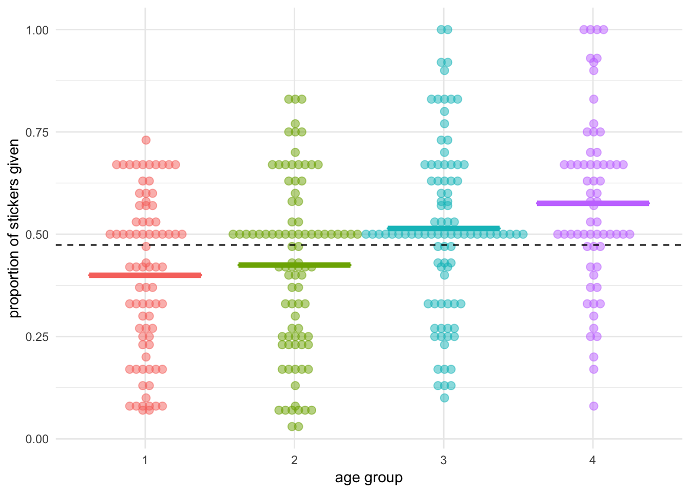
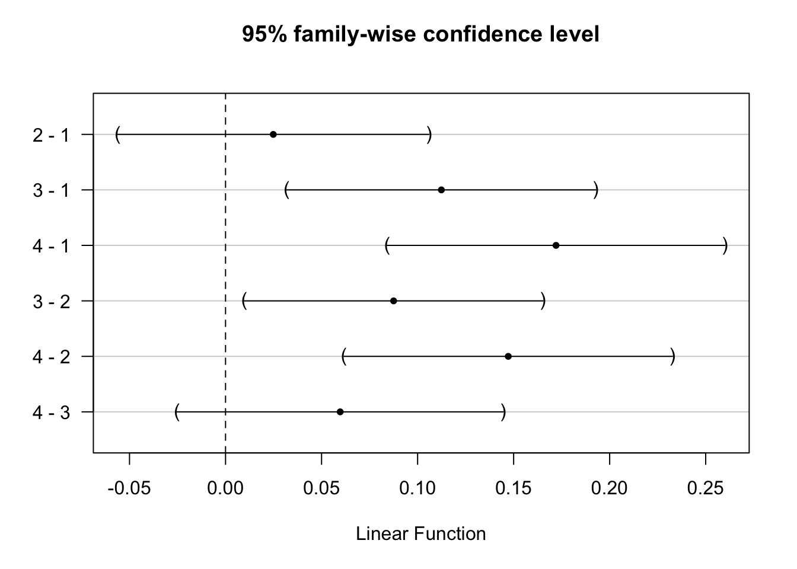
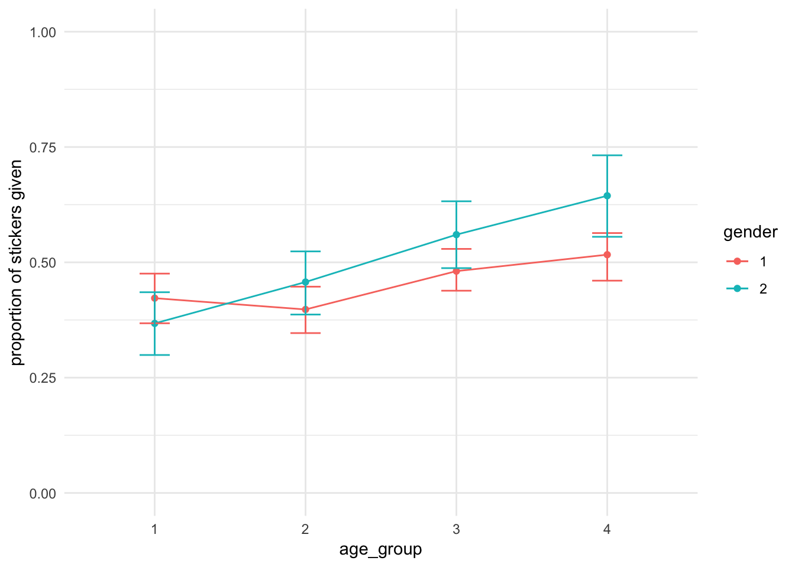

CONJ620: CM 4.4
Post-hoc tests & two-way ANOVA
Alison Presmanes Hill
Logistics
- A complete knitted
htmlfile is due on Sakai by Tuesday September 11 (2:30pm). - This lab is based on the assigned reading that includes this article on ANOVA in Nature Points of Significance.
- Also, this blog post is very well-written and helpful.
Overview
In the last lab, we did an ANOVA by hand, then you did a linear regression using lm and (hopefully) saw that a one-way ANOVA and a simple linear regression are equivalent. Both are based on the general linear model, and rely on calculating statistics based on sums of squares.

In this lab, we'll start with post-hoc tests and p-value corrections, leading up to a two-way ANOVA where we include two predictor or independent variables. Get excited!
Packages
library(tidyverse)
library(janitor)
library(moderndive)
library(broom)
library(multcomp)
select <- dplyr::select # deals with the namespace conflictGet the data
This is all the same as in the previous lab.
"A univariate [read: one response/outcome variable] ANOVA was conducted investigating the impact of the between-subjects factors [read: all levels of factors are measured from independent samples] of age (4: 3–4 years, 5–6 years, 7–8 years, 9–11 years), number of resources (2: 12 or 30 stickers), number of recipients (2: 1 or 2 anonymous recipients), and gender (2: female, male) on the proportion of resources shared."
# create variable to store url
link <- "https://dataverse.harvard.edu/api/access/datafile/2712105"
# read in column names only
sticker_names <- link %>%
read_tsv(n_max = 0) %>% # default: col_names = TRUE
rename(stickersgiven = 'absolutenumberofstickersgiven(Conditions1or3:Outof12;Conditions2or4:Outof30)') %>%
names()
# read in data, set column names
stickers <- link %>%
read_tsv(skip = 2, col_names = sticker_names) %>%
clean_names()
# clean it up a bit
# in class we got errors, so we commented out two lines
stickers_clean <- stickers %>%
mutate(num_stickers = case_when(
number_stickers == 1 ~ 12,
number_stickers == 2 ~ 30)) %>%
filter(!(subject_number == 263)) %>%
filter(gender %in% c(1, 2)) %>%
#mutate(condition = if_else(subject_number == 263, 3L, condition)) %>%
#mutate(num_stickers = if_else(subject_number == 263, 30L, num_stickers)) %>%
mutate(prop_given = round(stickersgiven / num_stickers, 2)) %>%
select(-percent_given_outof100percent, -number_stickers) %>%
mutate(giveornot = case_when(
prop_given == 0 ~ 0,
prop_given > 0 ~ 1))
givers <- stickers_clean %>%
filter(giveornot == 1) %>%
mutate(age_groups = as.factor(agegroups),
gender = as.factor(gender))Plot the group means
Use ggplot2 to make a plot that allows you to visualize the mean proportion of stickers given by age group for the givers, and allows you to see the spread as well. Think about whether you can also include the actual observed data points as recommended by Tracy Weissberger.


Also make a plot of the means with standard error bars colored by gender, following help here (no bar graphs/dynamite plots)!
Also see this link.

Post-hoc testing
If you feel happy to assume that the variances of the response/outcome/dependent variable are equal across groups, you can use a method for comparing the individual groups called Tukey's Honestly Significant Difference. The way to do this contrast procedure is to use a package called multcomp. Let's start with the lm object.
sticker_lm <- lm(prop_given ~ age_groups, data = givers)
anova(sticker_lm)Analysis of Variance Table
Response: prop_given
Df Sum Sq Mean Sq F value Pr(>F)
age_groups 3 1.4825 0.49418 11.795 0.000000236 ***
Residuals 325 13.6163 0.04190
---
Signif. codes: 0 '***' 0.001 '**' 0.01 '*' 0.05 '.' 0.1 ' ' 1sticker_mcp <- glht(sticker_lm, mcp(age_groups = "Tukey"))
confint(sticker_mcp)
Simultaneous Confidence Intervals
Multiple Comparisons of Means: Tukey Contrasts
Fit: lm(formula = prop_given ~ age_groups, data = givers)
Quantile = 2.5819
95% family-wise confidence level
Linear Hypotheses:
Estimate lwr upr
2 - 1 == 0 0.02487 -0.05613 0.10586
3 - 1 == 0 0.11434 0.03375 0.19492
4 - 1 == 0 0.17579 0.08754 0.26404
3 - 2 == 0 0.08947 0.01154 0.16740
4 - 2 == 0 0.15092 0.06510 0.23675
4 - 3 == 0 0.06145 -0.02399 0.14689summary(sticker_mcp, test = univariate()) #unadjusted p values
Simultaneous Tests for General Linear Hypotheses
Multiple Comparisons of Means: Tukey Contrasts
Fit: lm(formula = prop_given ~ age_groups, data = givers)
Linear Hypotheses:
Estimate Std. Error t value Pr(>|t|)
2 - 1 == 0 0.02487 0.03137 0.793 0.428567
3 - 1 == 0 0.11434 0.03121 3.663 0.000291 ***
4 - 1 == 0 0.17579 0.03418 5.143 0.000000468 ***
3 - 2 == 0 0.08947 0.03018 2.964 0.003256 **
4 - 2 == 0 0.15092 0.03324 4.540 0.000007924 ***
4 - 3 == 0 0.06145 0.03309 1.857 0.064210 .
---
Signif. codes: 0 '***' 0.001 '**' 0.01 '*' 0.05 '.' 0.1 ' ' 1
(Univariate p values reported)You can also plot these with base R.
plot(sticker_mcp)For which age groups is the difference in mean prop_given significantly different from zero?
Alternatively, you can do post-hoc pairwise t-tests. These are not the same as normal t-tests!
\[t = \frac{\bar{x}_i - \bar{x}_j}{\sqrt{MS_{residual} (\frac{1}{n_i} + \frac{1}{n_j})}}\]
with(givers, pairwise.t.test(prop_given, age_groups,
paired = FALSE))
Pairwise comparisons using t tests with pooled SD
data: prop_given and age_groups
1 2 3
2 0.4286 - -
3 0.0012 0.0098 -
4 0.0000028 0.0000396 0.1284
P value adjustment method: holm Adjust p-values
summary(sticker_mcp, test = adjusted("bonferroni")) #p value adjustment
Simultaneous Tests for General Linear Hypotheses
Multiple Comparisons of Means: Tukey Contrasts
Fit: lm(formula = prop_given ~ age_groups, data = givers)
Linear Hypotheses:
Estimate Std. Error t value Pr(>|t|)
2 - 1 == 0 0.02487 0.03137 0.793 1.00000
3 - 1 == 0 0.11434 0.03121 3.663 0.00174 **
4 - 1 == 0 0.17579 0.03418 5.143 0.00000281 ***
3 - 2 == 0 0.08947 0.03018 2.964 0.01954 *
4 - 2 == 0 0.15092 0.03324 4.540 0.00004754 ***
4 - 3 == 0 0.06145 0.03309 1.857 0.38526
---
Signif. codes: 0 '***' 0.001 '**' 0.01 '*' 0.05 '.' 0.1 ' ' 1
(Adjusted p values reported -- bonferroni method)